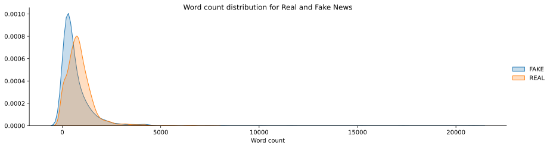
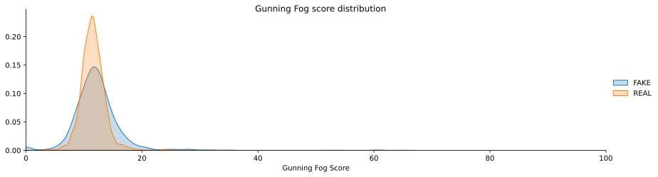

import pandas as pd
import matplotlib.pyplot as plt
import seaborn as sns
import textstat as tstat
from nltk.stem import WordNetLemmatizer
from scipy.sparse import hstack
from sklearn.model_selection import train_test_split
from sklearn.linear_model import LogisticRegression
from sklearn.model_selection import StratifiedKFold, cross_val_score
from sklearn.feature_extraction.text import TfidfVectorizer, CountVectorizer
%config InlineBackend.figure_format = "svg"With the maturity of the internet, fake news has become much more common in recent years. Fake news is disinformation which is disguised as “real” news to influence public opinion. Can we use machine learning to classify news articles fake or real? Text contains a lot of information let’s investigate if we can use it!
In this blog post, we construct a simple logistic regression model to classify news articles to be fake or real. We’ll be using bag-of-words and tf-idf representations to vectorize our textual data. I try to recreate and improve the Bayesian model from George McIntire detailed in this post with a logistic regression model.
Loading Data
Let’s load news data and look at the first few rows. We’ll be using only the core text of the articles to train our classifier. This will keep our model simple. You could also use the title or the title in combination with the full text or other extracted features.
news = pd.read_csv(
"https://s3.amazonaws.com/assets.datacamp.com/blog_assets/fake_or_real_news.csv"
).iloc[:, 1:]
news = news[["text", "label"]]
news.head()| text | label | |
|---|---|---|
| 0 | Daniel Greenfield, a Shillman Journalism Fello... | FAKE |
| 1 | Google Pinterest Digg Linkedin Reddit Stumbleu... | FAKE |
| 2 | U.S. Secretary of State John F. Kerry said Mon... | REAL |
| 3 | — Kaydee King (@KaydeeKing) November 9, 2016 T... | FAKE |
| 4 | It's primary day in New York and front-runners... | REAL |
The data can be downloaded here and is provided by DataCamp.
In the cell above I display the text column which contains the text of the article and the label columns. This las one holds information on whether or not the text is fake.
Exploratory Data Analysis
Before modelling the data, let’s first take a look at the textual data! I would like to see if there is a simple difference between real and fake texts. There are several basic ways to look at our textual data. We could look at the number of words of our texts, the number of characters or the average length of words.
FAKE ARTICLE: Daniel Greenfield, a Shillman Journalism Fellow at the Freedom Center, is a New York writer focusing on radical Islam.
REAL ARTICLE: U.S. Secretary of State John F. Kerry said Monday that he will stop in Paris later this week, amid criticism that no top American officials attended Sunday’s unity march against terrorism.
Furthermore, it maybe could be useful to do part of speech (POS) tagging, do entity recognition or compute readability scores and identify differences between the text classes.
Let’s start by printing the first sentence of a fake and real news article to see if these text parts give us clues about fake or realness.
I couldn’t really classify these articles to be real or fake, at least not based on their first sentences. Before diving deeper into the exploratory data analysis, let’s look at the distribution of our target labels.
plt.figure(figsize=(10, 1))
sns.countplot(y ="label", data=news)
plt.title("Labels per fake news class")
plt.xlabel("")
plt.ylabel("")
sns.despine();The figure above shows an even distribution of labels. There are as many fake as real news articles in our datasets. We set our baseline at around 50%. Anything above this score will be better than random guessing.
Number of words
Let’s see if there’s a difference between the number of words used in real articles compared to fake news texts. We first look at some simple summary statistics to get a feel for the data. We apply a lambda function that splits every word in the texts, stores it in a list and gets the length of the list. After that, we store word count back into a new column in our original data frame.
news["word_count"] = news['text'].apply(
lambda x: len(x.split())
)We can now compute several summary statistics on the word count grouped by there label. Let’s see if there are differences in word count between fake and real articles.
news.groupby('label')['word_count'].describe()| count | mean | std | min | 25% | 50% | 75% | max | |
|---|---|---|---|---|---|---|---|---|
| label | ||||||||
| FAKE | 3164.0 | 679.129267 | 958.962790 | 0.0 | 212.0 | 421.0 | 830.0 | 20891.0 |
| REAL | 3171.0 | 873.257647 | 722.483569 | 7.0 | 450.5 | 771.0 | 1123.0 | 7602.0 |
The output above suggests that real news articles have a greater average and median word count, with less variation (standard deviation and percentiles) than the fake news articles. The range of word count of fake news articles is far greater ranging from 0 to more than 20.000.
Let’s look at the distribution of words and whether or not there is a difference in word count between real and fake news. I will use seaborn’s FaceGrid() and kdeplot to display this distribution.
g = sns.FacetGrid(news, hue="label", aspect=3.5, height=3.5)
g.map(sns.kdeplot, "word_count", shade=True)
g.fig.suptitle("Word count distribution for Real and Fake News");
g.add_legend(title="")
plt.ylabel("")
plt.xlabel("Word count");
The plot confirms our summary statistics inferences. Real news articles seem to have a greater word count than fake news articles. We could do statistical tests to confirm this. Further exploration could look at the number of characters or number of sentences. We, however, are going to do this but look at readability.
Readability
Are fake news articles easier to read real news articles? Let’s find out! We’ll use a readability score to quantify this. Readability tells us the ease with which the reader can understand a text. The readability depends on the contents of the texts. It measures the complexity of the vocabulary and syntax.
We’ll use the Gunning fog index to classify the readability of our news articles. This index takes into account two basic factors;
- The greater the average sentence length the harder the text is to read.
- The greater the percentage of complex words, the harder the text is to read.
The formula returns a score corresponding to the grade in which someone would be able to read the text. The higher the index the harder the text is to read. I’ll use the textstat package to get the score of every text and store it in a new column.
news['gunning_fog_score'] = news['text'].apply(lambda x: tstat.gunning_fog(x))Let’s group by the target label and see if there is a difference between the readability score for real and fake news articles.
I don’t know if textstat gives as the correct gunning fog score (the seem high), but we can use it for comparison._
news.groupby('label')['gunning_fog_score'].describe()| count | mean | std | min | 25% | 50% | 75% | max | |
|---|---|---|---|---|---|---|---|---|
| label | ||||||||
| FAKE | 3164.0 | 12.157209 | 4.283665 | 0.0 | 10.13 | 11.875 | 13.65 | 64.68 |
| REAL | 3171.0 | 11.539842 | 2.034056 | 3.6 | 10.30 | 11.490 | 12.62 | 27.76 |
The summary statistics of the Gunning fog index suggest that real texts are somewhat harder to read. They also have less variation in their readability score. Which if we think about it makes some intuitive sense. If we plot the distribution of scores we also see this difference.
g = sns.FacetGrid(news, hue="label", aspect=3.5, height=3.5)
g.map(sns.kdeplot, "gunning_fog_score", shade=True)
g.fig.suptitle("Gunning Fog score distribution");
g.add_legend(title="")
plt.ylabel("")
plt.xlabel("Gunning Fog Score")
plt.xlim(0, 100);
Train, Validation & 1st Model
Before we go and model the data we split the data into a train and validation set. We create a validation dataset to validate our classifier. We’ll use 75% of the data for training the logistic and 25% for validating our model. We’ll only use the text of the article, not the title, word count or readability score. Furthermore, we use stratification to ensure that we have even distribution of target label classes in the train and validation data.
X_train, X_valid, y_train, y_valid = train_test_split(
news.drop(columns=["label"]),
news["label"].values,
test_size=0.25,
random_state=2,
stratify=news["label"].values
)
X_train.shape, X_valid.shape((4751, 3), (1584, 3))Let’s use a train a logistic regression classifier. We use stratified cross validation to validate our model.
logistic_regression = LogisticRegression(max_iter=1000)
kfold = StratifiedKFold(n_splits=10, random_state=2, shuffle=True)
cv = cross_val_score(
logistic_regression,
X_train[['word_count', 'gunning_fog_score']],
y_train,
cv=kfold
)
cv.mean()0.5933569217160548Feature Extraction & Modelling
These simple statistics do not seem to really help us classify fake news. Accuracy is higher than random but I think we can do better. We need to find another way to represent text that does allow a model to make better classifications.
Bag-of-words model
We will start by building a bag-of-words model. A bag of words model is a simple way to represent text. In a bag-of-words model, we extract word tokens from the text and compute the word frequency of these tokens. Based on these frequencies and our corpus vocabulary we build word vector. The frequency of occurrence of each word in a text is a feature we train our classifier on.
Simply put, every row represents a text/article from the dataset, every column represents a term (word) of the dataset, and every cell contains the frequency count of that word in a particular text.
We can construct a bag of word model with CountVectorizer() from sklearn. We fit the #!python CountVectorizer() on the training data. After that, we transform the train and validation data. This will create a sparse matrix that we can transform into a dense matrix using the to #!python toarray() function.
We also don’t take stop words into account, because they often do not provide useful information.
count_vector = CountVectorizer(
analyzer='word',
stop_words='english'
)
count_vector_train = count_vector.fit_transform(X_train['text'])
count_vector_valid = count_vector.transform(X_valid['text'])
count_vector_train.toarray().shape(4751, 60245)We can see that based on training data this vector has 60245 features. Let’s look at these features by using get_feature_names on the bag-of-words vectorizer.
bow_df = pd.DataFrame(
data=count_vector_train.toarray(),
columns=count_vector.get_feature_names()
);We can see that the word “argued” occurs 1 time in the first document of our training data.
We’ll use this bag-of-words model to train our logistic regression.
logistic_regression = LogisticRegression(max_iter=1000)
kfold = StratifiedKFold(n_splits=10, random_state=2, shuffle=True)
cv = cross_val_score(
logistic_regression,
count_vector_train,
y_train,
cv=kfold
)
cv.mean()0.9124396284829721The logistic regression algorithm performs much better on this basic bag-of-words model with a cross-validation score of 91,55%.
Term Frequency and Inverse Data Frequency
Another way to represent text is by using term frequency-inverse data frequency (tf-idf). This way of representing text quantifies how relative importance a word is to a text and in our dataset.
\[w_{i,j} = tf_{i,j} \times \log(\frac{N}{df_i})\]
The first component (tf) calculates the word frequency \(tf_{i,j}\) by counting how many times the word appears in a document \(n_{i,j}\) compared to all the words in the document \(\sum_kn_{i,j}\).
\[tf_{i,j} = \frac{n_{i,j}}{\sum_kn_{i,j}}\]
The second component (idf) can be calculated as the logarithm of the number of texts in the dataset, divided by the total number of texts where the specific word appears. This gives weight to every word. Rare words get a high idf score, the more common words a low score.
tf-idf basically measures of original a word.
We can use TfidfVectorizer to create a tf-idf representation of our news articles by fitting and transforming the data.
tfidf_vector = TfidfVectorizer(
analyzer="word",
stop_words='english'
)
tfidf_train = tfidf_vector.fit_transform(X_train['text'])
tfidf_valid = tfidf_vector.transform(X_valid['text'])
tfidf_train.toarray().shape(4751, 60245)Let’s also extract the feature names and look at their corresponding weights.
tfidf_df = pd.DataFrame(
data=tfidf_train.toarray(),
columns=tfidf_vector.get_feature_names()
)We can see that now there are weights assigned to the features per document.
Let’s use the same logistic regression algorithm on the tf-idf representation as on the bag-of-words model.
logistic_regression = LogisticRegression(max_iter=1000)
kfold = StratifiedKFold(n_splits=10, random_state=2, shuffle=True)
cv = cross_val_score(
logistic_regression,
tfidf_train,
y_train,
cv=kfold
)
cv.mean()0.9105413533834588When using tf-idf representation the logistic regression model has an accuracy of 91,03 %. This is a little less than the bag-of-words model.
Text processing
Both the bag-of-words and the tf-idf model have a lot of features (60,000). Let’s look at ways make to turn down the number of features.
Let’s apply lemmatization. This process converts words into there base form. We perform lemmatization by using nltk’s lemmatization functionality.
First, we define a WordNetLemmatizer. Then we define a lambda function that takes a string, loops over the words of the string (text), stores them in a list. Lastly, words are joined back together into a string.
lemma = WordNetLemmatizer()
X_train_lemma = X_train['text'].apply(
lambda x: ' '.join([lemma.lemmatize(word) for word in x.strip().split(' ')])
)
X_valid_lemma = X_valid['text'].apply(
lambda x: ' '.join([lemma.lemmatize(word) for word in x.strip().split(' ')])
)Let’s look at the dimensions of our bag-of-words model after applying lemmatization.
cv_lemma_train = count_vector.fit_transform(X_train_lemma)
cv_lemma_valid = count_vector.transform(X_train_lemma)
cv_lemma_train.toarray().shape(4751, 58849)We can see we lost about 2,000 features using lemmatization and removing stop words.
Let’s compare some models that we fit on the bag of words representation with lemmatization applied.
logistic_regression = LogisticRegression(max_iter=1000)
kfold = StratifiedKFold(n_splits=10, random_state=2, shuffle=True)
cv = cross_val_score(
logistic_regression,
cv_lemma_train,
y_train,
cv=kfold
)
cv.mean()0.9139150818222026We can see that we achieve a train accuracy score of validation score of 91.60% of the logistic regression. This model also has the lowest variance. But can we use other text representations to achieve better accuracy scores? Let’s look at tf-idf with lemmatization applied.
tfidf_lemma_train = tfidf_vector.fit_transform(X_train_lemma)
tfidf_lemma_valid = tfidf_vector.transform(X_valid_lemma)
logistic_regression = LogisticRegression(max_iter=1000)
kfold = StratifiedKFold(n_splits=10, random_state=2, shuffle=True)
cv = cross_val_score(
logistic_regression,
tfidf_lemma_train,
y_train,
cv=kfold
)
cv.mean()0.9122260061919505The tf-idf model also improved slightly. Overall lemmatization decreased the number of features of our data without decreasing the accuracy of our classifier.
We can also combine several representations. We can create a tf-idf representation of the characters in the articles and combine them with the tf-idf word representation. Let’s first create the character model. To keep the number of features smaller we set the max_features to 60000.
tfidf_char = TfidfVectorizer(
analyzer='char',
strip_accents='unicode',
stop_words='english',
ngram_range=(2, 6),
max_features=60000
)
tfidf_train_char = tfidf_char.fit_transform(X_train_lemma)
tfidf_valid_char = tfidf_char.transform(X_valid_lemma)We use the hstack() function from SciPy to horizontally stack the sparse word and character matrices.
train_features = hstack([tfidf_lemma_train, tfidf_train_char])
valid_features = hstack([tfidf_lemma_valid, tfidf_valid_char])Final model
We train our final logistic regression classifier on the features that combine the words and character tf-idf - representations
logistic_regression = LogisticRegression(max_iter=1000)
kfold = StratifiedKFold(n_splits=10, random_state=2, shuffle=True)
cv = cross_val_score(
logistic_regression,
train_features,
y_train,
cv=kfold
)
cv.mean()0.9309601946041575We get an accuracy score of around 93.18% on the validation set!
logistic_regression.fit(train_features, y_train)
logistic_regression.score(valid_features, y_valid)0.9343434343434344The final testing score is 93.34% on the testing.
Conclusion
We used a logistic regression model to classify real and fake news articles. We used a bag-of-words and a tf-idf model to represent the article’s texts. This is a really simple way to classify articles, with good results. You could also use word embeddings, topic models and many more ways to represent text. Furthermore, you could also other classifier models, like Naive Bayes classifiers, Support Vector Machines and (Deep) Neural Nets. I also did not do any hyper parameter tuning to find the best model.